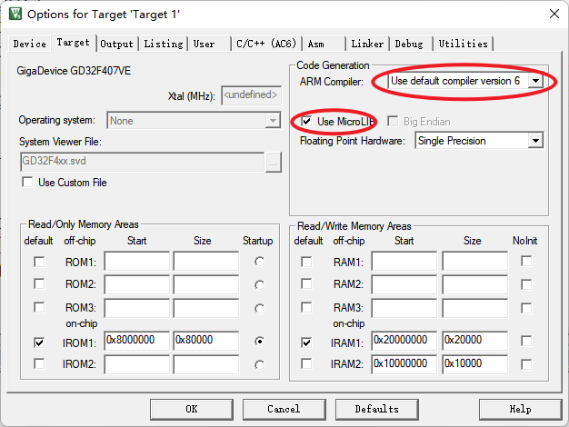
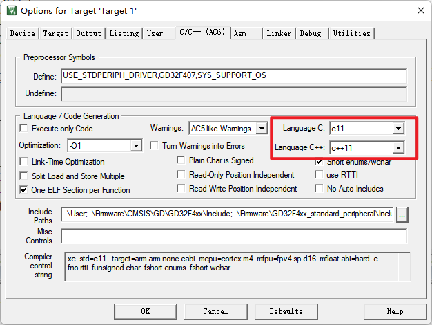

<!DOCTYPE lake>
<h2 data-lake-id="c0qvm" data-lake-index-type="2" id="c0qvm"><span data-lake-id="u3876f066" id="u3876f066">C与C++之间的区别</span></h2><p data-lake-id="ud0adc9e3" id="ud0adc9e3"><span data-lake-id="u5972898f" id="u5972898f">C语言与C++之间有许多重要的区别，主要体现在以下几个方面：</span></p><ol list="ub201cdaa"><li data-lake-id="ub78acad4" fid="ufc8b889a" id="ub78acad4"><strong><span data-lake-id="u8c01f732" id="u8c01f732">编程范式</span></strong><span data-lake-id="u87c9cb77" id="u87c9cb77">：</span></li></ol><ul data-lake-indent="1" list="u5c7d407e"><li data-lake-id="u386ee127" fid="u57bafc30" id="u386ee127"><strong><span data-lake-id="u076745f3" id="u076745f3">C语言</span></strong><span data-lake-id="ufe017f72" id="ufe017f72">：是一种过程式编程语言，主要关注函数和过程的调用。</span></li><li data-lake-id="u399b4928" fid="u57bafc30" id="u399b4928"><strong><span data-lake-id="u98e5f800" id="u98e5f800">C++</span></strong><span data-lake-id="ud990619c" id="ud990619c">：支持面向对象编程（OOP），允许使用类和对象来组织代码，支持封装、继承和多态。</span></li></ul><ol list="ub201cdaa" start="2"><li data-lake-id="uf652561e" fid="ufc8b889a" id="uf652561e"><strong><span data-lake-id="u9171a075" id="u9171a075">数据抽象</span></strong><span data-lake-id="uba5ab0dd" id="uba5ab0dd">：</span></li></ol><ul data-lake-indent="1" list="u85d79c21"><li data-lake-id="uc5810657" fid="uf5102b9c" id="uc5810657"><strong><span data-lake-id="u0bfa9891" id="u0bfa9891">C语言</span></strong><span data-lake-id="u378eca30" id="u378eca30">：没有内置的支持数据抽象，通常使用结构体来模拟。</span></li><li data-lake-id="uf918b3c3" fid="uf5102b9c" id="uf918b3c3"><strong><span data-lake-id="ud3b39008" id="ud3b39008">C++</span></strong><span data-lake-id="uef802f13" id="uef802f13">：提供类（class）和对象（object），支持数据封装和抽象。</span></li></ul><ol list="ub201cdaa" start="3"><li data-lake-id="u86000add" fid="ufc8b889a" id="u86000add"><strong><span data-lake-id="u2a39f997" id="u2a39f997">函数重载</span></strong><span data-lake-id="u7352146e" id="u7352146e">：</span></li></ol><ul data-lake-indent="1" list="u8e1c2519"><li data-lake-id="u25db5ec1" fid="u8e343f3c" id="u25db5ec1"><strong><span data-lake-id="u7839c9fe" id="u7839c9fe">C语言</span></strong><span data-lake-id="u83107ba9" id="u83107ba9">：不支持函数重载，同名函数必须具有不同的名称。</span></li><li data-lake-id="u0c563046" fid="u8e343f3c" id="u0c563046"><strong><span data-lake-id="u96cb42ae" id="u96cb42ae">C++</span></strong><span data-lake-id="u8dd66c71" id="u8dd66c71">：支持函数重载，可以定义多个同名但参数不同的函数。</span></li></ul><ol list="ub201cdaa" start="4"><li data-lake-id="udd08c905" fid="ufc8b889a" id="udd08c905"><strong><span data-lake-id="ue76683c8" id="ue76683c8">运算符重载</span></strong><span data-lake-id="u20125d1b" id="u20125d1b">：</span></li></ol><ul data-lake-indent="1" list="uac0350dd"><li data-lake-id="uc7a634a7" fid="ufc6033ff" id="uc7a634a7"><strong><span data-lake-id="u48d7fc9b" id="u48d7fc9b">C语言</span></strong><span data-lake-id="uccdf2262" id="uccdf2262">：不支持运算符重载。</span></li><li data-lake-id="u89e57b30" fid="ufc6033ff" id="u89e57b30"><strong><span data-lake-id="ub9bac766" id="ub9bac766">C++</span></strong><span data-lake-id="uc4896cfa" id="uc4896cfa">：允许开发者重载运算符，以便自定义数据类型的行为。</span></li></ul><ol list="ub201cdaa" start="5"><li data-lake-id="u887a93c3" fid="ufc8b889a" id="u887a93c3"><strong><span data-lake-id="ue2dcc60b" id="ue2dcc60b">模板</span></strong><span data-lake-id="u3a1bdbda" id="u3a1bdbda">：</span></li></ol><ul data-lake-indent="1" list="u86fb828f"><li data-lake-id="u02857f46" fid="u4ec84123" id="u02857f46"><strong><span data-lake-id="ub78f9fbc" id="ub78f9fbc">C语言</span></strong><span data-lake-id="u96d9828f" id="u96d9828f">：没有模板机制。</span></li><li data-lake-id="u6dd953fa" fid="u4ec84123" id="u6dd953fa"><strong><span data-lake-id="u047d3231" id="u047d3231">C++</span></strong><span data-lake-id="u2b164806" id="u2b164806">：支持模板，允许编写泛型代码，提高代码的重用性。</span></li></ul><ol list="ub201cdaa" start="6"><li data-lake-id="ud2882fe8" fid="ufc8b889a" id="ud2882fe8"><strong><span data-lake-id="u20275b10" id="u20275b10">标准库</span></strong><span data-lake-id="uf237b341" id="uf237b341">：</span></li></ol><ul data-lake-indent="1" list="ued30f199"><li data-lake-id="uc7a5ecbb" fid="uad216f18" id="uc7a5ecbb"><strong><span data-lake-id="ufc17b780" id="ufc17b780">C语言</span></strong><span data-lake-id="u00c92701" id="u00c92701">：标准库相对较小，主要提供基本的输入输出、字符串处理和内存管理等功能。</span></li><li data-lake-id="uc9e5afbd" fid="uad216f18" id="uc9e5afbd"><strong><span data-lake-id="u54f1d6d0" id="u54f1d6d0">C++</span></strong><span data-lake-id="uc1f781bd" id="uc1f781bd">：拥有更丰富的标准库，包括 STL（标准模板库），提供容器、算法和迭代器等功能。</span></li></ul><ol list="ub201cdaa" start="7"><li data-lake-id="u14cfa239" fid="ufc8b889a" id="u14cfa239"><strong><span data-lake-id="ufd7f1bc8" id="ufd7f1bc8">异常处理</span></strong><span data-lake-id="u06dd5426" id="u06dd5426">：</span></li></ol><ul data-lake-indent="1" list="u7e3cfc3c"><li data-lake-id="u5658ed4b" fid="uf1b64ab9" id="u5658ed4b"><strong><span data-lake-id="ub35c63ce" id="ub35c63ce">C语言</span></strong><span data-lake-id="u9073b95f" id="u9073b95f">：没有内置的异常处理机制，通常使用返回值来处理错误。</span></li><li data-lake-id="ud26cb17b" fid="uf1b64ab9" id="ud26cb17b"><strong><span data-lake-id="uf5a179c2" id="uf5a179c2">C++</span></strong><span data-lake-id="u4a0ee9dc" id="u4a0ee9dc">：提供了异常处理机制（try, catch, throw），使得错误处理更加灵活和清晰。</span></li></ul><ol list="ub201cdaa" start="8"><li data-lake-id="uc76717e3" fid="ufc8b889a" id="uc76717e3"><strong><span data-lake-id="u7c26e5d3" id="u7c26e5d3">命名空间</span></strong><span data-lake-id="u826e151f" id="u826e151f">：</span></li></ol><ul data-lake-indent="1" list="u9955fa6b"><li data-lake-id="u4aedf361" fid="ua39929be" id="u4aedf361"><strong><span data-lake-id="u4b1f17c6" id="u4b1f17c6">C语言</span></strong><span data-lake-id="ubd0c8756" id="ubd0c8756">：没有命名空间，所有标识符在全局范围内。</span></li><li data-lake-id="u12d8e6a9" fid="ua39929be" id="u12d8e6a9"><strong><span data-lake-id="u073e51bd" id="u073e51bd">C++</span></strong><span data-lake-id="u6c4610df" id="u6c4610df">：支持命名空间，帮助避免名称冲突。</span></li></ul><ol list="ub201cdaa" start="9"><li data-lake-id="u8d131089" fid="ufc8b889a" id="u8d131089"><strong><span data-lake-id="ua1d51c59" id="ua1d51c59">内存管理</span></strong><span data-lake-id="u74ddcff6" id="u74ddcff6">：</span></li></ol><ul data-lake-indent="1" list="ud9b17260"><li data-lake-id="uc05ee4dc" fid="u13260c6e" id="uc05ee4dc"><strong><span data-lake-id="ucf2308f4" id="ucf2308f4">C语言</span></strong><span data-lake-id="ua7868fd1" id="ua7868fd1">：使用 </span><code data-lake-id="u01d54fb6" id="u01d54fb6"><span data-lake-id="ub649febd" id="ub649febd">malloc</span></code><span data-lake-id="ub765817e" id="ub765817e"> 和 </span><code data-lake-id="u2a48ebf3" id="u2a48ebf3"><span data-lake-id="u680403d3" id="u680403d3">free</span></code><span data-lake-id="u4db839ce" id="u4db839ce"> 来动态分配和释放内存。</span></li><li data-lake-id="u102ce95d" fid="u13260c6e" id="u102ce95d"><strong><span data-lake-id="ucf9c2c5e" id="ucf9c2c5e">C++</span></strong><span data-lake-id="ub3d72f2b" id="ub3d72f2b">：使用 </span><code data-lake-id="uda11c352" id="uda11c352"><span data-lake-id="u1e874c00" id="u1e874c00">new</span></code><span data-lake-id="uc89a459a" id="uc89a459a"> 和 </span><code data-lake-id="u582a0fca" id="u582a0fca"><span data-lake-id="u07074daf" id="u07074daf">delete</span></code><span data-lake-id="uded0ef72" id="uded0ef72">，并提供构造函数和析构函数来管理资源。</span></li></ul><p data-lake-id="uad796579" id="uad796579"><span data-lake-id="u259507b8" id="u259507b8">这些区别使得 C++ 在处理复杂系统和大型项目时更加灵活和强大，但 C 语言在嵌入式系统和硬件编程等领域仍然广泛应用。</span></p><h2 data-lake-id="UZOmD" data-lake-index-type="2" id="UZOmD"><span data-lake-id="u1cdfcdd8" id="u1cdfcdd8">环境配置 </span></h2><p data-lake-id="u3f6cf943" id="u3f6cf943"><span data-lake-id="u22a4853e" id="u22a4853e">使用编译器6</span></p><p data-lake-id="u0aeea55e" id="u0aeea55e"></p><p data-lake-id="u6c0ee675" id="u6c0ee675"><span data-lake-id="u02db5f8c" id="u02db5f8c">指定使用C++的版本</span></p><p data-lake-id="ub9d5f246" id="ub9d5f246"></p><p data-lake-id="ufb42be8d" id="ufb42be8d"><br/></p><h2 data-lake-id="fFEGK" data-lake-index-type="2" id="fFEGK"><span data-lake-id="uec7f8999" id="uec7f8999">构建cpp与c的桥梁</span></h2><h3 data-lake-id="mW4Ah" data-lake-index-type="2" id="mW4Ah"><span data-lake-id="ua6abdffc" id="ua6abdffc">新建cpp_support.h</span></h3><span class="yuque-card-unsupported">[codeblock]</span><p data-lake-id="u171b6345" id="u171b6345"><br/></p><p data-lake-id="ub62a5195" id="ub62a5195"><span data-lake-id="u4ec6718b" id="u4ec6718b">这段代码的作用是为了在 C++ 中允许 C 语言的函数被调用。具体来说：</span></p><ul list="udc2f6020"><li data-lake-id="u122034b7" fid="uff14349c" id="u122034b7"><code data-lake-id="u12d9885b" id="u12d9885b"><span data-lake-id="u63e890ad" id="u63e890ad">#ifdef __cplusplus</span></code><span data-lake-id="u8ac8fa9f" id="u8ac8fa9f">：这个预处理指令检查当前编译器是否在 C++ 模式下。如果是 C++ 编译器，接下来的代码块将会被编译。</span></li><li data-lake-id="uee04388b" fid="uff14349c" id="uee04388b"><code data-lake-id="uc2f8ec79" id="uc2f8ec79"><span data-lake-id="ucb2ac9bc" id="ucb2ac9bc">extern "C"</span></code><span data-lake-id="ub1467f70" id="ub1467f70">：这个声明告诉 C++ 编译器，后面的函数使用 C 语言的链接方式。这意味着 C++ 编译器不会对这些函数名进行名称改编（name mangling），从而使得 C 代码可以正确地调用这些函数。</span></li></ul><p data-lake-id="u8e3cb1fd" id="u8e3cb1fd"><span data-lake-id="ua3678eb2" id="ua3678eb2">总结来说，这段代码的目的是确保 C 语言的函数在 C++ 中可以被正确链接和调用，避免名称冲突和链接错误。</span></p><h3 data-lake-id="K4o1M" data-lake-index-type="2" id="K4o1M"><span data-lake-id="ub3112ae7" id="ub3112ae7">新建cpp_support.cpp</span></h3><p data-lake-id="u76c71617" id="u76c71617"><br/></p><span class="yuque-card-unsupported">[codeblock]</span><p data-lake-id="u1ca4559b" id="u1ca4559b"><br/></p><h2 data-lake-id="EGLRE" data-lake-index-type="2" id="EGLRE"><span data-lake-id="ud7f78257" id="ud7f78257">新建灯类</span></h2><h3 data-lake-id="yDQMV" data-lake-index-type="2" id="yDQMV"><span data-lake-id="uf5b8f477" id="uf5b8f477">新建Led.h</span></h3><span class="yuque-card-unsupported">[codeblock]</span><h3 data-lake-id="PNAJv" data-lake-index-type="2" id="PNAJv"><span data-lake-id="ueff940e3" id="ueff940e3">新建Led.cpp</span></h3><span class="yuque-card-unsupported">[codeblock]</span><h3 data-lake-id="tfUnx" data-lake-index-type="2" id="tfUnx"><span data-lake-id="u799b54e8" id="u799b54e8">创建一个对象</span></h3><span class="yuque-card-unsupported">[codeblock]</span><p data-lake-id="ucb4bb3df" id="ucb4bb3df"><br/></p><h2 data-lake-id="KtKTT" data-lake-index-type="2" id="KtKTT"><span data-lake-id="ube8cc921" id="ube8cc921">在main.c中调用</span></h2><p data-lake-id="ub6e85c55" id="ub6e85c55"><span data-lake-id="ua2b1666c" id="ua2b1666c">在main.c文件中，调用cpp文件中的cpp_support_main()函数</span></p><span class="yuque-card-unsupported">[codeblock]</span>